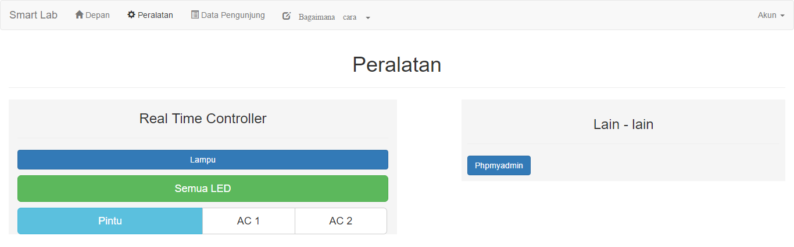

Bagaimana cara
Mengendalikan Perangkat Kelistrikan
- Arahkan mouse ke arah Navbar
- Klik tombol Peralatan
- Kemudian akan muncul halaman seperti gambar di bawah

- Kolom sebelah kiri merupakan berbagai tombol untuk mengendalikan perangkat kelistrikan.
Kolom sebelah kanan merupakan berbagai tombol peralatan lainnya. Seperti phpMyAdmin.
- Tekan salah satu tombol jika ingin menyalakan/mematikan perangkat tersebut.
Sebagai contoh, jika ingin menyalakan lampu tekan tombol lampu.
Jika ingin mematikan lampu maka tekan lagi tombol lampu.